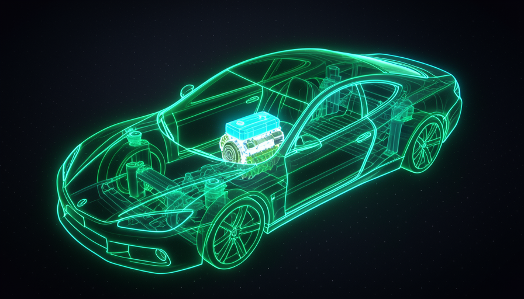
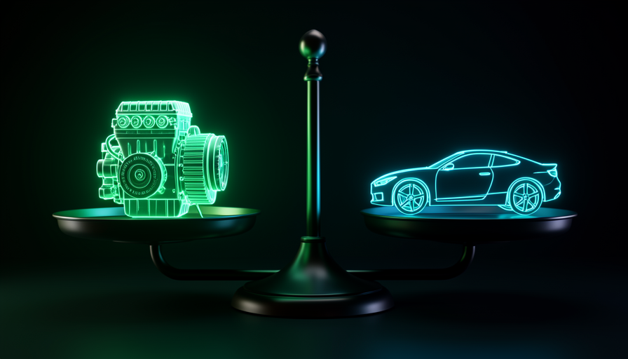

📖 Living glossary (read first — come back whenever you need to)
Since this is the track for Fundamentals, here every term is explained in plain language. In the next tracks, we’ll just use them—so learn these:
⚙️ What is the harness
🧠 Imagine it this way: you hired a brilliant rideshare driver. He drives better than anyone. But can he win the race on his own? No — it depends on the car, of the map, of the tools in the box. It’s the same with AI: AI is the driver; the rest of the car is what you build.
When people talk about “using AI to code,” almost everyone thinks only of the model — the AI itself, a language model (LLM) like Claude or GPT. But the model is only one piece. Everything you add around has a name: harness (pronounced “ar-ness”; in English, it’s the harness/chassis that holds everything together).
The harness is four things that you controls: (1) the prompts that you write; (2) the skills that you give the agent; (3) the environment (the tools and permissions it has); and (4) the codebase where it operates. In Matt Pocock's own words: "the model is useful, but the harness requires just as much work — and you have much more control over the harness than over the model."
The model (the AI) is the box that glows. The harness is everything around it—and that’s where your power lies.

⚠️ Common beginner mistake
Think that "improving AI" = "switching to a newer model." Almost always, what's holding back the result is the harness (a vague prompt, a missing skill, a messy codebase) — not the model.
In one sentence: harness = the whole car around the engine; the engine (the AI) is just one part.
Going deeper (optional): where does the word "harness" come from?
In English, harness is the harness that holds and directs a horse’s strength—or the chassis/framework that holds a system together. In the AI community, it’s become the name for everything that “harnesses” the model: the environment, tools, and instructions that turn a standalone model into a useful, controllable tool.
🏎️ The Formula 1 analogy
🧠 Imagine it this way: two Formula 1 cars with the same engine. One wins, the other finishes last. The difference? Chassis, aerodynamics, tires, pit strategy. The engine matters — but it’s only a fraction of what it takes to win.
This is the central image of the Pocock method. Everyone is obsessed with the engine (the model): “A new model came out—is it better?” But pilots and F1 engineers know that the car is a system. The engine alone can’t cut through the air, hold the turn, or change a tire at the right time.
In our world, that means switching models is like switching engines. It can give you a boost — but if the chassis (your harness) is bad, you don't win the race. And here's a detail that changes everything: you practically doesn't control the engine (who trains the model is OpenAI, Anthropic…), but controls the chassis almost 100%. That’s why you should put your effort into the chassis.
Quick recall: in the analogy, what is the "chassis"?
In one sentence: the engine (model) is one part; the whole car (harness) is what wins the race.
🎛️ Why you control the harness
🧠 Imagine it this way: you can't replace your employee's brain — but you can give them a better manual, better tools, and an organized desk. The results skyrocket, and the "brain" stays the same.
The model is a black box you didn’t train. The harness, on the other hand, is entirely in your hands — and there are three levers you can pull today, without waiting for any launch:
Pocock sums up the reason in a single sentence: "you have much more control over the harness than the model." It’s worth unpacking what this means in practice, because it’s easy to agree and still not act. On the side of the model, your options are very limited: choose which one to use and maybe tweak a setting or two. You don’t decide how it thinks, you don’t correct its biases, you don’t speed up the next release—you wait. On the harness, the options are vast and immediate: rewrite a prompt to make it specific, save a skill with your project’s conventions, grant or remove a tool, rename files so AI can find things. Each of these changes fits into a single workday, and the effect shows up in the next response—no release, no need to ask anyone. That’s why it makes sense to put almost all your attention here: it’s the only side where changes actually affect the outcome.
🔬 Worked example: same AI, two outcomes
Task: "create a login endpoint". Same model, two harnesses:
Bad harness
Prompt: "log in". No pattern skill, no tests, messy codebase. → The AI makes up some pattern, breaks everything else, and you spend hours reviewing.
Good harness
Clear prompt + "project auth patterns" skill + existing tests + organized codebase. → The AI follows the pattern, runs the tests, and gets it right on the first try.
In one sentence: you don’t change the AI’s brain, but you do change the manual, the tools, and the table — and that already determines the outcome.
⚠️ The mistake of focusing on the model
🧠 Imagine it this way: someone who switches cars every week looking for the “perfect engine,” but never learns to drive. They’ll never win a race.
Pocock calls this "looking at the wrong thing—the shiny new toy." The extreme example is the vibe coder that jumps from tool to tool (new model comes out? Switch; new app comes out? Switch) and never learns any fundamentals. It always stays at the surface.
The practical problem: if you tie everything to a specific model, when it changes (or a cheaper one appears), your entire setup breaks. Worse — you haven't developed the skills that for real scale. Focusing on the model means renting; focusing on the harness means building assets.
✓ Think through the harness
- • Learning fundamentals that last.
- • Improve the setup a little every day.
- • Use the best model without relying on it alone.
✗ Think through the model
- • Switching tools with every hype cycle.
- • Wait for “AGI” to solve it for you.
- • Never learn how things work under the hood.
In one sentence: chasing the model is renting; investing in the harness is building an asset.
⚖️ Model and harness are 50/50
🧠 Imagine it this way: A scale. On one side, the engine; on the other, the chassis. Most people think it weighs 90% engine / 10% everything else. Pocock balances it: 50/50.
Most treat the model as 90% of the result and harness optimization as 10%. Pocock flips the equation: think in terms of 50/50. The model really matters—but the harness carries equal weight, and it’s the part you control. Huge practical consequence: half of your result lies in something you can improve today. And there’s a bonus: with a better harness, a cheaper model delivers the same result (you’ll see this in module 1.5, "Token savings").
Notice the asymmetry hidden in that 50/50 — this is Pocock's golden line: "the model is useful, but the harness requires just as much work — and you have much more control over the harness than over the model." Both sides matter equally, but only one of them obeys you. The engine is practically fixed: you don’t train Claude or GPT, choose their data, or change how they reason internally. The chassis, by contrast, you can adjust line by line—rewrite the prompt, save a skill, organize a file, allow or block a tool. So think about the effort in terms of return: pushing the engine side is almost like pushing a wall (you can only wait for the next version); pushing the harness side shifts the balance right away. So when half the weight is under your direct control and the other half is locked, the rational path is obvious—invest where the leverage responds.
A concrete example to make it stick. Imagine you get the task “refactor this payments module” and the AI delivers something confusing. The “90% model” reading says: "the model is weak; I'll wait for the next release" — and you stay idle. The 50/50 reading says: "half the problem is mine" — and then you take action: break the request into smaller steps, add a skill with the project’s payment patterns, point out the tests that already exist, clean up the file that had become a maze. The same the model starts getting it right the very same day. The engine didn’t change — the chassis did. That’s exactly the point: you didn’t wait for anyone; you took care of the half that was yours.
📊 The calculation that changes your week
If the result is 50% model + 50% harness and you only control the harness, so every your room for improvement is all on one side. You wait on the model’s side; you work on the harness side. Anyone who thinks "90/10" wastes nearly all their effort chasing the wrong 10%—and stays dependent on the labs’ release schedules. Anyone who thinks "50/50" puts their energy where it pays off: in the half that responds today.

In one sentence: half the result is in your hands — don’t outsource that half.
🎯 Where your leverage lies
Wrapping up: whenever you’re going to “improve the AI,” translate that into improve the harness. Before blaming the model for a bad result, run the diagnosis below — it’s the practical summary of everything we covered. Copy and paste it when you get stuck:
Resultado ruim da IA? Antes de trocar de modelo, cheque o HARNESS: [ ] PROMPT — o pedido estava claro e específico? Dei contexto suficiente? [ ] SKILLS — faltou um procedimento/padrão salvo pra ela seguir? [ ] AMBIENTE — ela tinha as ferramentas e permissões certas? [ ] CODEBASE — o código é fácil de navegar e mudar, ou é um labirinto? Se 3+ falharam, o problema é o chassi — não o motor.
In one sentence: "improving the AI" almost always means "tuning the harness" — start there.
🧾 Module Summary
Next module:
1.2 — The Bitter Lesson: why it doesn't help to just "wait for the model to improve."